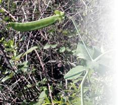

Овощная фасоль

Овощная фасоль попала в Россию в XVI веке, но понадобилось почти столетие для внедрения ее в хозяйство. Родина фасоли – Южная Америка.
В настоящее время более 70 стран возделывают эту культуру.
Фасоль с давних времен использовалась как лекарство. Отвары и настои ее лечат от гипертонии, заболеваний почек, сердца, мочевого пузыря, ревматизма, подагры.
Цветки фасоли в отваре полезны при образовании камней в почках. Размолотая фасоль прикладывается к ожогам, рожистым воспалениям и ранам, настои из стручков полезны при лечении диабета, так как фасоль выводит сахар из крови.

Трудно найти подобное растение, в котором содержалось бы столько целебных элементов и белка.
Из фасоли готовят замечательные гарниры, соусы, первые блюда, холодные закуски, муку для кондитерской промышленности, а зеленые бобы – отличное сырье для консервирования.
Сорта фасоли делят на скороспелые (продолжительность вегетации 70–75 дней) и позднеспелые (более долгий период вегетации). По характеру роста существуют вьющиеся сорта и кустовые, с прямостоячим стеблем.
Разновидности фасоли могут иметь одноцветные плоды, семена и лепестки, а также пестрые, разноцветные, используемые для декоративных навесов и беседок.
Фасоли не требуются опылители, она отлично переносит засуху с повышением температуры до 40 °C.
Семена фасоли прорастают при температуре 12 °C. Клубеньковые бактерии фасоли способны забирать азот из воздуха.
Овощная фасоль представляет собой травянистое растение высотой 20–40 см, развивающееся в виде куста. Она неустойчива к заморозкам, которые нередко становятся причиной гибели молодых побегов.
В России культивируются лущильные, полусахарные и сахарные сорта фасоли, причем последние в бобах не имеют пергаментного грубого слоя и называются спаржевыми. Это наиболее популярные у огородников сорта.
До сих пор пользуется большим спросом старый, хорошо проверенный временем сахарный сорт.